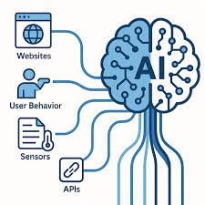
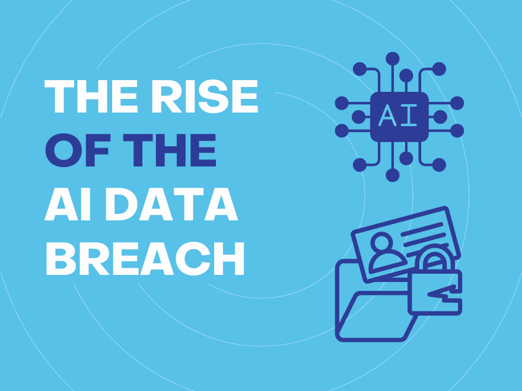

Privacy Concerns
AI and Surveillance
AI systems increasingly rely on mass data collection.
In 2025, YouTube announced in a blog post that it would use AI to estimate whether users are over or under 18 by analysing behavioural signals. If flagged as underage, users would face restrictions such as disabled personalised advertising and additional safeguards. Those incorrectly flagged would need to verify their age using government ID or credit card information.
Similarly, Discord paused aspects of its AI-based age verification rollout following public backlash. Reports indicated that its former verification partner, Persona, conducted extensive identity checks including screening against watchlists and politically exposed persons databases.
Researchers further found that Persona conducted 269 distinct checks to include 14 categories including terrorism and espionage before assigning each user a risk and similarity score highlighting the claim about protecting younger users may just be a façade to increase surveillance on users.
AI and Data Breaches
Data breaches are not an uncommon in the 2020s in April 2025 M&S suffered a major cyberattack which compromised customers personal information resulting in £300m in loss profits.
Separately, researchers discovered that an Android app called “Video AI Art Generator & Maker” exposed over 12 terabytes of user-generated media including more than 1.5 million images and hundreds of thousands of video due to misconfigured cloud storage.
Because AI media apps often store both original and modified content, leaks can expose highly sensitive personal information at massive scale. As AI platforms accumulate unprecedented volumes of data, robust cybersecurity and transparency must be made mandatory.